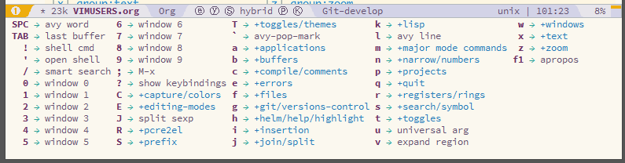

Migrating from Vim
Table of ContentsClose
1 Purpose of this document
This document is intended to supplement the Spacemacs documentation by bridging the gap between vim and Spacemacs. While some information may be duplicated, this does not replace the Spacemacs documentation. It is recommended that you read both files to fully understand Spacemacs.
2 Philosophy
One misconception many vim users have is that Spacemacs is an Emacs clone of vim. Spacemacs does not seek to completely mimic the behavior of vim everywhere, only when editing. You should not expect every vim command to be available, although many are. You cannot use Vimscript to configure Spacemacs, but who likes Vimscript anyway? It is important to understand that Spacemacs is an attempt to improve on both vim and Emacs using the superior modal editing of vim and the nicer configuration language of Emacs.
3 Basic orientation
3.1 Terms
Spacemacs uses some different terminology than vim, which can cause confusion for new users. This section attempts to clear up any confusion.
3.1.1 Modes vs. States
In vim you have various editing modes like insert mode and visual mode to
manipulate text. In Emacs, we have states. These are equivalent to vim modes.
For example, evil-insert-state is the same as insert-mode in vim.
A minor-mode in Emacs is like a feature that is activated. For example,
aggressive-indent-mode is a minor-mode that automatically indents code as you
type. It is important to know that there can be many minor-modes activated in a
buffer. Many Emacs packages work by providing a minor-mode. A major-mode
determines the editing behavior of Emacs in the current buffer. There is
generally a corresponding major-mode per filetype. An example of a major-mode is
python-mode, which provides python specific settings in python files. There is
only one major-mode per buffer.
3.1.2 Layers
Spacemacs has the concept of layers. Layers are similar to vim plugins. They
provide new features to use in Spacemacs. However, layers are often comprised of
several packages that integrate well with each other. For example, the python
layer includes support for auto-completion, documentation look-up, tests, and
much more by using several different packages. This keeps you from thinking
about what packages to install, and instead worry about what features you want.
More information on layers can be found in the customization section and in the
documentation. There is also a more in-depth guide on writing layers here.
3.1.3 Micro-states
Spacemacs provides a special functionality called micro-states. Micro-states
allow similar commands to be run in succession without repeatedly pressing the
<Leader> key. Micro-states are usually triggered by using a keybinding with the
following pattern: <Leader> <group> . where group is the category the
micro-state falls under. When in a micro-state you will see documentation at the
bottom of your window. To exit a micro-state press q.

3.2 Keybinding conventions
Spacemacs uses SPC as its <Leader> key. This document will use SPC to refer to
the <Leader> key. All keybindings are mnemonic and are organized under the
<Leader> key. For example, the keybindings for language-specific commands are
always under the SPC m prefix. A full list of conventions used in Spacemacs is
here. Note that all keybindings can be changed.
Spacemacs uses which-key to show available keybindings after a delay:

3.3 Running commands
Emacs commands can be run using SPC :. This will pop up a buffer using Helm
which can be used to run any Emacs command. You can also run many ex commands
using :, just like in vim.
Note: You can run Emacs interactive commands using :, but you cannot run ex
commands using SPC :.
3.4 Buffer and window management
3.4.1 Buffers
Buffers in Emacs and vim are essentially the same. The keybindings for buffers
are located under the SPC b prefix.
| Keybinding | Function |
|---|---|
SPC b b <buffer-name> |
Create a buffer named <buffer-name>. |
SPC b b |
Search through open buffers and recent files. |
SPC b n or :bnext |
Switch to the next buffer. (See Special buffers) |
SPC b p or :bprevious |
Switch to the previous buffer. (See Special buffers) |
SPC b d or :bdelete |
Kill current buffer. |
SPC b k |
Search for a buffer to kill. |
SPC b K |
Kill all buffers except the current buffer. |
SPC b . |
Buffer micro-state. |
3.4.1.1 Special buffers
By default Emacs creates a lot of buffers that most people will never need, like
*Messages*. Spacemacs automatically ignores these when using these
key bindings. More information can be found here.
3.4.2 Windows
Windows are like splits in vim. They are useful for editing multiple files at
once. All window keybindings are under the SPC w prefix.
| Keybinding | Function |
|---|---|
SPC w v or :vsplit |
Opens a vertical split on the right. |
SPC w s or :split |
Opens a horizontal split below. |
SPC w h/j/k/l |
Navigate among windows. |
SPC w H/J/K/L |
Move the current window. |
SPC w . |
Window micro-state. |
3.5 Files
All file commands in Spacemacs are available under the SPC f prefix.
| Keybinding | Function |
|---|---|
SPC f f |
Opens a buffer to search for files in the current directory. |
SPC f r |
Opens a buffer to search through recently opened files. |
SPC f s or :w |
Save the current file. |
:x |
Save the current file and quit. |
:e <file> |
Open <file> |
3.6 The Help System
Emacs has an extensive help system. All keybindings under the SPC h d prefix
allow convenient access to the help system. The most important of these
keybindings are SPC h d f , SPC h d k , and SPC h d v. There is also the
SPC <f1> keybinding which allows you to search for documentation.
| Keybinding | Function |
|---|---|
SPC h d f |
Prompts for a function and shows its documentation. |
SPC h d k |
Prompts for a keybinding and shows what it is bound to. |
SPC h d v |
Prompts for a variable and shows its documentation and current value. |
SPC <f1> |
Searches for a command, function, variable, or face and shows its documentation. |
Whenever, you see weird behavior or want to know what something does, these functions are the first thing you should refer to.
3.7 Exploring
There are a few ways to explore the functionality of Spacemacs. One is to read the source code on Github. You can begin to feel your way around Emacs Lisp and how Spacemacs works this way. You can also use the following keybindings to explore:
| Keybinding | Function |
|---|---|
SPC f e h |
Lists all layers and allows you to view files from the layer. |
SPC ? |
Lists all keybindings. |
4 Customization
4.1 The .spacemacs file
When you first start spacemacs, you will be prompted to choose an editing style.
If you are reading this, you likely want to choose the vim style. A .spacemacs
file will be created with the appropriate style selected. Most trivial
configuration will go in this file.
There are four top-level function in the file: dotspacemacs/layers,
dotspacemacs/init, dotspacemacs/user-init and dotspacemacs/user-config.
The dotspacemacs/layers function exist only to enable and disable layers and
packages. The dotspacemacs/init function is run before anything else during
startup and contains Spacemacs settings. You will never need to touch this
function except to change default Spacemacs settings.
The dotspacemacs/user-init function is also run before anything else and
contains user specific configuration. The dotspacemacs/user-config function
is the one you will use the most. This is where you define any user configuration.
| Keybinding | Function |
|---|---|
SPC f e d |
Open your .spacemacs |
SPC f e D |
Update your .spacemacs manually using a diff with the default template |
4.2 Emacs Lisp
This section introduces a few emacs lisp functions that are needed to configure
Spacemacs. For a more detailed look at the language, see this link. If you
really want to learn everything there is about emacs lisp, use the info page
found at SPC h i elisp RET .
4.2.1 Variables
Setting variables is the most common way to customize the behavior of Spacemacs. The syntax is simple:
(setq variable value) ; Syntax ;; Setting variables example (setq variable1 t ; True variable2 nil ; False variable3 '("A" "list" "of" "things"))
4.2.2 Keybindings
Defining keybindings is something that almost everyone will want to do. The
built-in define-key function is the best way to do that.
(define-key map new-keybinding function) ; Syntax ;; Map H to go to the previous buffer in normal mode (define-key evil-normal-state-map (kbd "H") 'spacemacs/previous-useful-buffer) ;; Mapping keybinding to another keybinding (define-key evil-normal-state-map (kbd "H") (kbd "^")) ; H goes to beginning of the line
The map is the keymap you want to bind the key in. Most of the time you will use
evil-<state-name>-state-map. These correspond to different evil-mode states.
For example, using evil-insert-state-map maps the keybinding in insert mode.
To map <Leader> keybindings, use the evil-leader/set-key function.
(evil-leader/set-key key function) ; Syntax ;; Map killing a buffer to <Leader> b c (evil-leader/set-key "bc" 'kill-this-buffer) ;; Map opening a link to <Leader> o l only in org-mode (spacemacs/set-leader-keys-for-major-mode 'org-mode "ol" 'org-open-at-point)
4.2.3 Functions
You may occasionally want to define a function to do a more complex customization. The syntax is simple:
(defun func-name (arg1 arg2) "docstring" ;; Body ) ;; Calling a function (func-name arg1 arg1)
Here is an example of a function that is useful in real life:
;; This snippet allows you to run clang-format before saving ;; given the current file as the correct filetype. ;; This relies on the c-c++ layer being enabled. (defun clang-format-for-filetype () "Run clang-format if the current file has a file extensions in the filetypes list." (let ((filetypes '("c" "cpp"))) (when (member (file-name-extension (buffer-file-name)) filetypes) (clang-format-buffer)))) ;; See http://www.gnu.org/software/emacs/manual/html_node/emacs/Hooks.html for ;; what this line means (add-hook 'before-save-hook 'clang-format-for-filetype)
4.3 Activating a Layer
As said in the terms section, layers provide an easy way to add features.
Activating a layer is done in the .spacemacs file. In the file search for the
dotspacemacs-configuration-layers variable. By default, it should look like
this:
(defun dotspacemacs/layers () (setq-default ;; ... dotspacemacs-configuration-layers '(;; auto-completion ;; better-defaults emacs-lisp ;; (git :variables ;; git-gutter-use-fringe t) ;; markdown ;; org ;; syntax-checking )))
You can uncomment these suggested layers by deleting the semi-colons for a nice
out-of-the-box experience. To add a layer, add its name to the list and restart
Emacs or press SPC f e R . To view all layers and their documentation use SPC
f e h.
4.4 Creating a Layer
To group configuration or when configuration doesn't fit well in your
.spacemacs file, you can create a configuration layer. Spacemacs provides a
builtin command to generate the layer boilerplate:
SPC :configuration-layer/create-layer. This generates a folder that looks like this:
[layer-name] |__ [local]* | |__ [example-mode-1] | | ... | |__ [example-mode-n] |__ config.el* |__ funcs.el* |__ keybindings.el* |__ packages.el [] = directory * = not created by the command
The packages.el file contains a list of packages that you can install in the
variable <layer-name>-packages. Any package that is available on the MELPA
repository can be added to the list. A list can also exclude packages using the
:excluded t property.
Each package requires a function to initialize it. The function must be named
with this pattern: <layer-name>/init-<package-name>. This function contains
configuration for the package. There are also pre/post-init functions to
execute code before or after a package loads. It would look like this:
(setq layer-name-packages '(example-package ;; This layer uninstalls example-package-2 ;; by setting the :excluded property to true (t) (example-package-2 :excluded t))) (defun layer-name/post-init-package () ;; Add configuration to a package in another layer here ) (defun layer-name/init-example-package () ;; Configuration for example-package goes here )
Note: Only one layer can have a init function for a package. If you want
to override the configuration of a package in another layer, use a
<layer-name>/pre-init function in addition to use-package hooks.
If a package is not available on MELPA, you must use a local package or a package recipe. For more details see anatomy of a layer.
Make sure you add your layer to your .spacemacs file and restart to
activate it.
A detailed description of the loading process and how layers work can be found in LAYERS.org.
4.5 Installing a single package
Sometimes creating a layer is a bit overkill. Maybe you just want one package
and don't want to maintain a whole layer. Spacemacs provides a variable in the
dotspacemacs/layers function in .spacemacs called
dotspacemacs-additional-packages. Just add a package name to the list and it
will be installed when you restart. Loading the package is covered in the next
section.
4.6 Loading packages
Ever wonder how Spacemacs can load over a 100 packages in just a few seconds? Such low loading times must require some kind of unreadable black magic that no one can understand. Thanks to use-package, this is not true. It is a package that allows easy lazy-loading and configuration of packages. Here are the basics to using it:
;; Basic form of use-package declaration. The :defer t tells use-package to ;; try to lazy load the package. (use-package package-name :defer t) ;; The :init section is run before the package loads The :config section is ;; run after the package loads (use-package package-name :defer t :init (progn ;; Change some variables (setq variable1 t variable2 nil) ;; Define a function (defun foo () (message "%s" "Hello, World!"))) :config (progn ;; Calling a function that is defined when the package loads (function-defined-when-package-loads)))
This is just a very basic overview of use-package. There are many other ways
to control how a package loads using it that aren't covered here.
4.7 Uninstalling a package
Spacemacs provides a variable in the dotspacemacs/init function in
.spacemacs called dotspacemacs-excluded-packages. Just add a package name to
the list and it will be uninstalled when you restart.
4.8 Common tweaks
This section is for things many will want to change. All of these settings go in
the dotspacemacs/user-config function in your .spacemacs unless otherwise noted.
4.8.1 Changing the escape key
Spacemacs uses [[https://github.com/syl20bnr/evil-escape][evil-escape]] to
allow escaping from many major-modes with one keybinding. You can customize
the variable in your dotspacemacs/user-config like this:
(defun dotspacemacs/user-config () ;; ... ;; Set escape keybinding to "jk" (setq-default evil-escape-key-sequence "jk"))
More documentation is found in the evil-escape README.
4.8.2 Changing the colorscheme
The .spacemacs file contains the dotspacemacs-themes variable in the
dotspacemacs/init function. This is a list of themes that can be cycled
through with the SPC T n keybinding. The first theme in the list is the one
that is loaded at startup. Here is an example:
(defun dotspacemacs/init ;; Darktooth theme is the default theme ;; Each theme is automatically installed. ;; Note that we drop the -theme from the package name. ;; Ex. darktooth-theme -> darktooth (setq-default dotspacemacs-themes '(darktooth soothe gotham)))
All installed themes can be listed and chosen using the SPC T h keybinding.
4.8.3 Nohlsearch
Spacemacs emulates the default vim behavior which highlights search results even
when you are not navigating between them. You can use SPC s c or :nohlsearch
to disable search result highlighting.
To disable the result highlighting when it is not needed anymore automatically,
you can uninstall the evil-search-highlight-persist package.
4.8.4 Sessions
Spacemacs does not automatically restore your windows and buffers when you
reopen it. If you use vim sessions regularly you may want to add
(desktop-save-mode t) to your dotspacemacs/user-config in your .spacemacs
to get this functionality. You will then be able to load the saved session
using SPC : desktop-read. The location of the desktop file can be set with
the variable desktop-dirname. To automatically load a session,
add (desktop-read) to your .spacemacs.
4.8.5 Navigating using visual lines
Spacemacs uses the vim default of navigating by actual lines, even if they are
wrapped. If you want j and k to behave like g j and g k, add this to
your .spacemacs:
(define-key evil-normal-state-map (kbd "j") 'evil-next-visual-line) (define-key evil-normal-state-map (kbd "k") 'evil-previous-visual-line)
5 Other useful links
- Emacs Manual
- Spacemacs Documentation
- Spacemacs: A Vimmer's Emacs Prerequisites
- Note: The article refers to
SPC b sas the keybinding to switch buffers. It isSPC b b
- Note: The article refers to
- Configuring Spacemacs: A Tutorial
- From Vim to Emacs+Evil chaotic migration guide